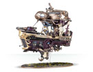
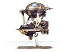

卡拉顿霸主
当矮人的堡垒被混沌大军摧毁，矮人们开始了流亡之旅，而一些发现了以太金的矮人走上了一条不同的道路——向天空进发，凭借以太金这种比空气还要轻的特性，他们在天空建立起巨大的城市，随着时间的推移他们逐渐形成了一个独特的势力——卡拉顿霸主。

锤击炮艇：锤击炮艇一般为巡空铁甲舰提供火力支援和保护，也在小规模行动中为地面小队提供火力支援

巡空铁甲舰： 巡空铁甲舰是卡拉顿霸主的主力作战单位，全舰装备了无数的武器装备，还具备一个运输仓来运输地面部队。